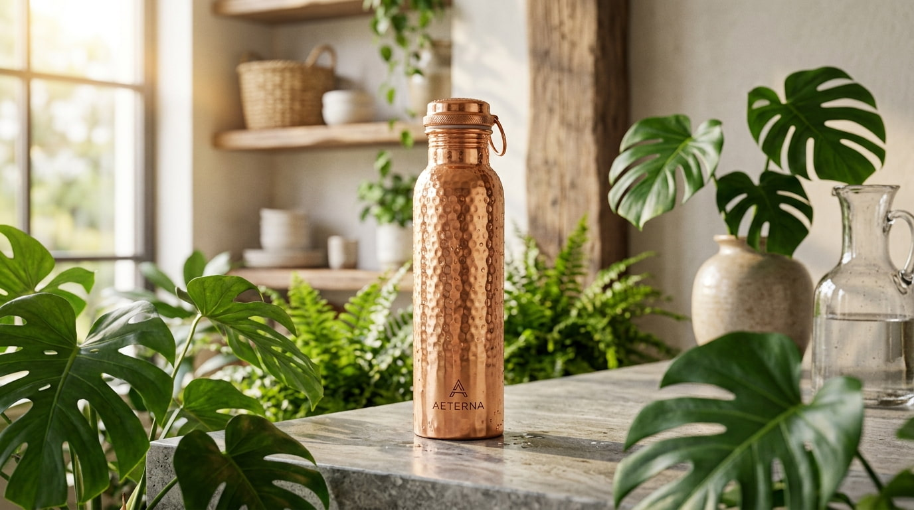

10 Surprising Health Benefits of Drinking from a Copper Bottle
For centuries, traditional Indian medicine (Ayurveda) has recognized the incredible healing properties of copper. Storing water in a copper vessel is an ancient practice that naturally purifies the water and infuses it with essential trace minerals. At Shuddhi, we believe that hydration is more than just drinking water—it is a path to holistic wellness.

Why is Copper Water Special?
When you store water in a pure copper bottle for 6-8 hours, it undergoes a process called Oligodynamic effect. Copper ions are released into the water, which naturally kill harmful bacteria and viruses while infusing the water with vital minerals. This makes the water "alive" and highly beneficial for your body.
The Top 10 Health Benefits
1. Aids in Digestion
Copper has antimicrobial properties that help kill harmful bacteria in the stomach. Drinking copper-infused water helps improve digestion, reduce gas, and heal stomach ulcers.
2. Boosts Immunity
Copper is a powerful antioxidant. It helps neutralize free radicals in the body, strengthens the immune system, and helps fight off infections, especially during the winter season.
3. Promotes Skin Health
Copper is essential for collagen production. Drinking water from a copper bottle helps regenerate skin cells, reduces wrinkles, and gives your skin a natural glow.
4. Aids in Weight Loss
Copper helps the body break down fat cells and eliminates toxins. It also improves metabolism, making it a great companion for your fitness journey.
5. Regulates Blood Pressure
Studies suggest that copper helps maintain a healthy heart and regulates blood pressure by balancing cholesterol levels.
6. Helps in Arthritis and Joint Pain
Copper has anti-inflammatory properties. It is highly recommended for people suffering from arthritis, as it helps reduce joint pain and inflammation.
7. Fights Anemia
Copper is required for the absorption of iron in the body. It helps the body form red blood cells and prevents the risk of iron deficiency anemia.
8. Improves Brain Function
The brain relies on copper to prevent the buildup of plaque. It is known to improve cognitive function and prevent memory loss.
9. Natural Water Purifier
Unlike plastic bottles which leach harmful BPA and microplastics into your water, a copper bottle acts as a natural, eco-friendly water purifier.
10. Sustainable and Eco-Friendly
By choosing a reusable Shuddhi copper bottle, you are actively reducing plastic waste. It is a beautiful way to practice sustainability every day.
Experience Ayurvedic Hydration Today
Ready to experience the transformative power of copper? At Shuddhi, we handcraft 100% pure copper water bottles right here in India. We also offer 24-hour insulated hot water bottles perfect for the upcoming Lucknow winter.
Enjoy fast, free local delivery across Jankipuram, Gomti Nagar, and greater Lucknow!